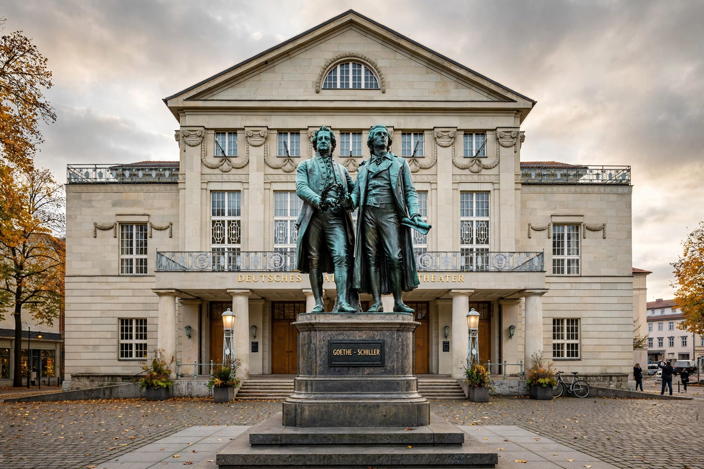

Weimar is a city in the German state of Thuringia, famous for its cultural heritage. In the late eighteenth and early nineteenth centuries it was the heart of the movement known as Weimar Classicism, centred on Johann Wolfgang von Goethe and Friedrich Schiller; in 1919 the National Assembly that founded Germany's first democratic republic met here, giving the Weimar Republic its name; and in 1919 Walter Gropius founded the Bauhaus art school in the city. "Classical Weimar" and the early Bauhaus sites are UNESCO World Heritage Sites. The city also stands near Buchenwald concentration camp, a memorial to the victims of the Nazi era.
| Country | Germany |
|---|---|
| State | Thuringia |
| Population | ~65,000 |
| First mentioned | 899 (as "Wimares") |
| Known for | Goethe and Schiller; Weimar Republic; Bauhaus |
| UNESCO sites | Classical Weimar (1998); Bauhaus sites (1996) |

First mentioned in 899, Weimar became a residence of the dukes of Saxe-Weimar. Under Duchess Anna Amalia and her son Carl August, the small court became a beacon of the German Enlightenment and Classicism: Goethe settled in Weimar in 1775 and lived there until his death in 1832; Schiller spent his final years in the city, completing William Tell there. Herder and Wieland completed the celebrated "four-leaf clover" of Weimar Classicism. The city is also associated with Bach, Liszt and Nietzsche.
After the First World War, the elected National Assembly convened in Weimar's National Theatre — away from revolutionary unrest in Berlin — and adopted the constitution of 11 August 1919 that created the Weimar Republic. The same year, Walter Gropius merged the city's art academy and arts-and-crafts school to found the Bauhaus, whose early buildings and houses in Weimar (including the Haus am Horn) are now World Heritage Sites; the school moved to Dessau in 1925.
In 1937 the Nazis established Buchenwald concentration camp on the Ettersberg just outside the city; more than 56,000 prisoners died there. After 1945 Weimar lay in the Soviet occupation zone and then East Germany. Since German reunification its classical and Bauhaus heritage has been restored, and it served as European Capital of Culture in 1999.
Major sights include Goethe's house and garden house, Schiller's house, the Duchess Anna Amalia Library (badly damaged by fire in 2004 and since restored), the Bauhaus Museum, the German National Theatre, and the Buchenwald Memorial. The onion market (Zwiebelmarkt), held since the seventeenth century, is one of Germany's oldest folk festivals.